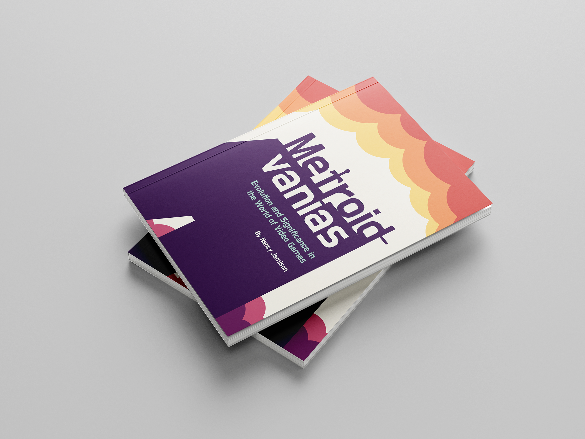
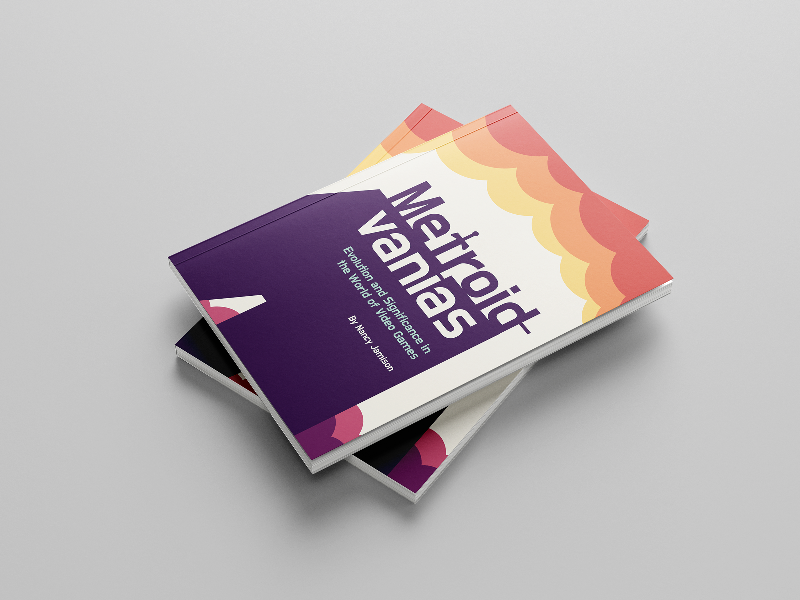

Metroidvanias: Evolution and Significance in the World of Videogames
2023
Print booklet, 5.5 x 8.5 in.
This annotated bibliography explores the budding video game genre known as Metroidvania and its journey to establish itself within the vast and diverse gaming industry of the twenty first century. What is a Metroidvania, and what sets it apart from other genres? How has its development been affected by the existing plethora of games, and how has it influenced the development of new ones? Since Metroidvania is relatively new, the answers to these questions remain open to debate. This bibliography stitches together the history behind the genre, and it highlights how the genre engages the player in unconventional ways that push the boundaries of what it means to game.
 
